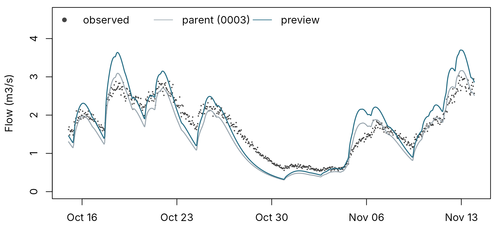
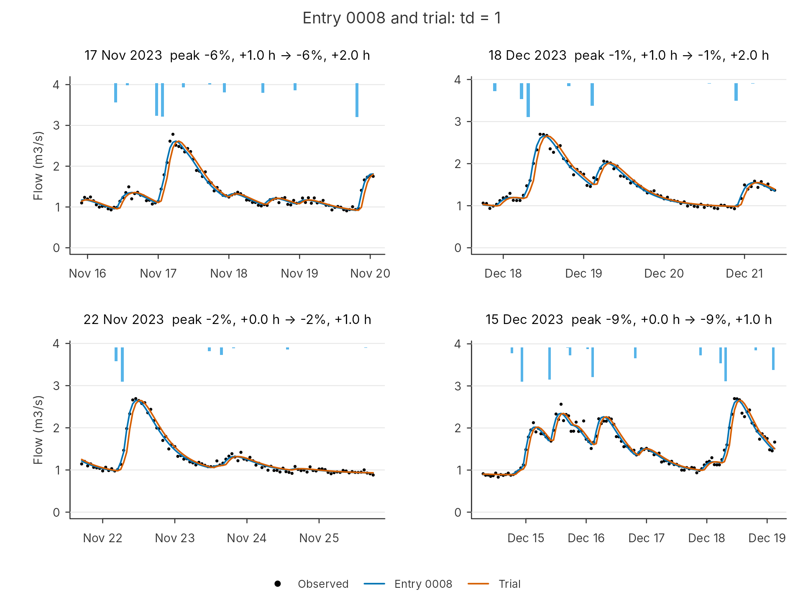
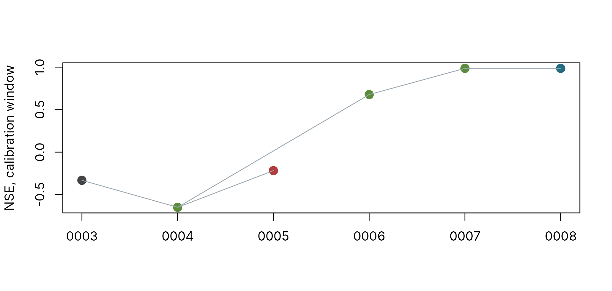
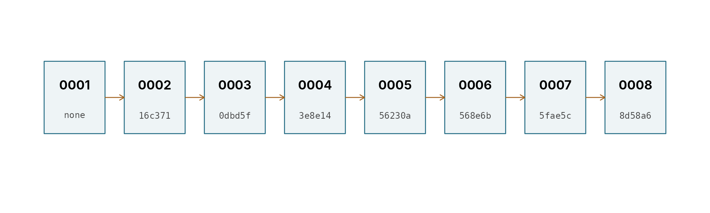

Calibration records: logging a calibration, and what the logs hold
pdmS7 documentation
Source:vignettes/calibration-log.Rmd
calibration-log.RmdManual calibration is judgement: a hydrologist reads a hydrograph, changes a parameter, and decides whether the model is better. A calibration can be defended later only if that judgement was recorded as it happened and cannot be quietly rewritten. The calibration log does this. Every action writes one entry to a project folder: who, when, which data and parameters, the scores, and the reasoning. Entries are never edited, each carries a checksum of the one before, and a report is generated from them.
This article walks through one calibration, from project start to
sign-off, then opens the logs up: what files they are, what is in them,
and how they guard against being quietly changed. The design record explains the
decisions behind it. The same steps are available without code in the
app, calibration_app().
Who is writing
Every entry records a declared name and role, with the operating-system login. Roles follow the governance framework: a Custodian does the calibration; a Steward (or Delegated Steward) signs it off; the Owner is named as accountable.
options(pdmS7.user = "Ann Hydrologist", pdmS7.role = "custodian")Set these once per session, or in .Renviron as
PDMS7_USER and PDMS7_ROLE.
Starting the project
project <- file.path(tempdir(), "brook-calibration")
start_calibration_project(
project, catchment = "Example Brook", gauge = "99001", purpose = "Flood forecasting",
area_km2 = 40, owner = "Deputy Director", steward = "Sam Steward"
)The data here are synthetic: four months of hourly rainfall, and the flow of a “true” catchment with gauging noise and a three-day gap.
set.seed(42)
n <- 24 * 120
time <- seq(as.POSIXct("2023-10-01", tz = "UTC"), by = 3600, length.out = n)
forcing <- data.frame(
time = time, rain = ifelse(stats::runif(n) < 0.07, stats::rgamma(n, 0.7, scale = 3), 0),
pet = 0.06
)
truth <- pdm_presets("standard")
truth$area_km2 <- 40
truth$fc <- 1.15
truth$recharge$kg <- 1500
truth$surface$k1 <- 3
truth$surface$k2 <- 8
# The river is already flowing when the record starts: steady state, not empty stores.
truth_model <- pdm_from_config(truth)
observed <- run_pdm(truth_model, forcing,
initial_state_from_flow(truth_model, 0.3, 0.7))$output$q_m3s *
exp(stats::rnorm(n, 0, 0.04))
observed[1500:1572] <- NARegistering the data
Registration copies the data into the project, takes their checksums, records their quality, and fixes the scorecard: the calibration and validation windows, the headline score, the starting soil moisture and any warning thresholds. Every later run is scored the same way, so trials can be compared fairly. Rows before the calibration window are warm-up.
Thresholds may be flows or river levels. Levels are converted to flows through a rating table registered with the data, and a level outside the rating is refused rather than extrapolated.
rating <- data.frame(stage_m = c(0.2, 0.5, 1, 1.5, 2), q_m3s = c(0.3, 0.8, 2.2, 5, 9))
thresholds <- data.frame(name = c("Flood Alert", "Flood Warning"), value = c(1.8, 1),
unit = c("flow", "level"))
reg <- register_data(
project, forcing, observed,
calibration = c("2023-10-15", "2023-12-31"),
validation = c("2024-01-01", "2024-01-28"),
headline = "nse", thresholds = thresholds, rating = rating,
reasoning = "Gauge record checked against the station log.",
wettest_years = 0
)
str(reg$summary[c("rows", "start", "end", "observed_missing", "observed_longest_gap")])
#> List of 5
#> $ rows : int 2880
#> $ start : chr "2023-10-01T00:00:00Z"
#> $ end : chr "2024-01-28T23:00:00Z"
#> $ observed_missing : int 73
#> $ observed_longest_gap: int 73Choosing the structure
start <- pdm_presets("standard")
start$area_km2 <- 40
select_structure(project, start,
reasoning = "Standard PDM as the starting point for a responsive clay catchment.")The structure is run and scored like any trial, so it is the root of the calibration path.
Trials
preview_trial() runs a change without logging it, so you
can look before you commit.
preview <- preview_trial(project, parent = 3, changes = c(fc = 1.15))
rows <- preview$rows[1:(24 * 30)]
parent_model <- pdm_from_config(start)
parent <- run_pdm(parent_model, forcing,
initial_state_from_flow(parent_model, observed[1], 0.7))$output$q_m3s
top <- max(observed[rows], parent[rows], preview$simulated[rows], na.rm = TRUE) * 1.25
par(mar = c(3, 4.2, 0.6, 0.6))
plot(time[rows], observed[rows], pch = 16, cex = 0.3, col = pal[5], xlab = "",
ylab = "Flow (m3/s)", ylim = c(0, top))
lines(time[rows], parent[rows], col = pal[7], lwd = 1.5)
lines(time[rows], preview$simulated[rows], col = pal[1], lwd = 1.5)
legend("topleft", c("observed", "parent (0003)", "preview"), bty = "n", horiz = TRUE,
col = c(pal[5], pal[7], pal[1]), pch = c(16, NA, NA), lty = c(NA, 1, 1))
The preview against its parent over part of the calibration window.
before <- unlist(project_trials(project)[1, c("nse", "volume_error", "kge_alpha")])
after <- unlist(preview$scores[c("nse", "volume_error", "kge_alpha")])
round(rbind(parent = before, preview = after), 3)
#> nse volume_error kge_alpha
#> parent -0.331 -0.285 1.459
#> preview -0.649 -0.141 1.915
dry <- function(v) sprintf("%.0f per cent too %s", abs(100 * v), if (v < 0) "dry" else "wet")The volume error has gone from 29 per cent too dry to 14 per cent too dry, but the NSE has fallen: the variability ratio, 1.92, shows the peaks are now too large. The trial is still an improvement, because the water balance is closer and the peaks are a separate question. That judgement is the hydrologist’s, not the headline score’s, and the log records it with its reason:
log_trial(project, parent = 3, changes = c(fc = 1.15), verdict = "better",
reasoning = paste0("Volume ", dry(before[["volume_error"]]),
"; raised the rainfall factor. Peaks now too big."))
log_trial(project, parent = 4, changes = c(recharge.kg = 500), verdict = "worse",
reasoning = "Much faster recharge, to feed baseflow; far too much water now.")
log_trial(project, parent = 4, changes = c(recharge.kg = 1500), verdict = "better",
reasoning = "A smaller change instead; volume and recessions both match.")
log_trial(project, parent = 6, changes = c(surface.k1 = 3, surface.k2 = 8),
verdict = "better", reasoning = "Peaks slightly early; slowed the surface cascade.")Trial 0005 was a dead end; trial 0006 went back to 0004 and tried a smaller change. The log keeps both, because a defensible calibration includes what was tried and rejected.
A short automatic calibration can polish the result. It is logged like a trial, with its bounds, seed and the table of every start.
auto <- log_auto_calibration(
project, parent = 7, lower = c(surface.k1 = 1, surface.k2 = 3),
upper = c(surface.k1 = 6, surface.k2 = 15), starts = 3, seed = 1,
control = list(maxit = 30), reasoning = "Fine-tune the routing within physical bounds."
)
log_note(project, "The January gap is a logger fault, not low flow.", refers_to = 2)Trials on the largest events
The headline score weighs every time step alike, so a change that
sharpens the floods may barely move it. event_workbench()
gathers a run’s largest events, ten unless you choose another number,
screened for rises lost in the baseflow and gaps.
workbench_try() reruns them with a change, in a fraction of
a second, and plot_workbench() draws them before (blue) and
after (vermillion), with each event’s peak and timing errors in its
title:
wb <- event_workbench(project, entry = auto$id, n = 4)
wb
#> Events workbench: 4 largest events in the calibration window, from entry 0008
#> Median peak error -4%, timing +0.5 h, event NSE 0.97
delayed <- workbench_try(wb, c(td = 1))
plot_workbench(wb, delayed)
The four largest calibration events of the automatic calibration, and the same with a one-hour time delay.
In the app, the Events tab does the same on sliders: the surface
stores, the time delay and the store shape b. Choose how
many events to show, move a slider, and the events redraw. Save
as trial logs the setting through log_trial() with
your verdict and reasoning, so it joins the log like any other trial,
and Check recessions draws the recession plot of the
record and the model (recession_analysis()), to see that
the low flows still fall at the right rate.
The calibration path
trials <- project_trials(project)
trials[, .(id, type, parent, changes, verdict, nse = round(nse, 3),
volume_error = round(volume_error, 3))]
#> id type parent changes
#> <char> <char> <char> <char>
#> 1: 0003 structure_selected <NA>
#> 2: 0004 trial 0003 fc 1 -> 1.15
#> 3: 0005 trial 0004 recharge.kg 4000 -> 500
#> 4: 0006 trial 0004 recharge.kg 4000 -> 1500
#> 5: 0007 trial 0006 surface.k1 2 -> 3; surface.k2 4 -> 8
#> 6: 0008 auto_calibration 0007
#> verdict nse volume_error
#> <char> <num> <num>
#> 1: <NA> -0.331 -0.285
#> 2: better -0.649 -0.141
#> 3: worse -0.217 0.359
#> 4: better 0.677 0.001
#> 5: better 0.985 -0.001
#> 6: <NA> 0.985 -0.001
x <- seq_len(nrow(trials))
colour <- ifelse(trials$type == "auto_calibration", pal[1],
ifelse(is.na(trials$verdict), pal[5],
ifelse(trials$verdict == "better", pal[3], pal[6])))
plot(x, trials$nse, pch = 16, col = colour, cex = 1.6, xaxt = "n", xlab = "",
ylab = "NSE, calibration window")
axis(1, at = x, labels = trials$id)
parents <- match(trials$parent, trials$id)
segments(x[parents], trials$nse[parents], x, trials$nse, col = pal[7])
Every run by its NSE on the calibration window. Lines join each run to its parent; colour shows the verdict.
Candidate and validation
The candidate is rerun before it is accepted, and must reproduce its recorded output exactly. Validation scores the validation window, once.
propose_candidate(project, entry = auto$id,
reasoning = "Best NSE with physically sensible time constants.")
val <- validate_candidate(project, reasoning = "Holds up on January.")
round(data.frame(calibration = unlist(val$calibration_scores),
validation = unlist(val$validation_scores))[c("nse", "kge", "volume_error",
"fdc_high"), ], 3)
#> calibration validation
#> nse 0.985 0.972
#> kge 0.988 0.970
#> volume_error -0.001 -0.001
#> fdc_high -0.009 -0.019Warning thresholds
Every run was also scored at both thresholds. An event is an episode above the threshold; a simulated crossing within six hours of an observed one is a hit, and exceedances less than a day apart count as one event.
pick <- function(scores, window) {
metrics <- c("observed_events", "hits", "misses", "false_alarms", "pod", "far", "csi",
"crossing_error_h", "csi_step")
do.call(rbind, lapply(thresholds$name, function(t) {
data.frame(threshold = t, window = window,
lapply(stats::setNames(metrics, metrics), function(m) {
round(scores[[paste0(m, ":", t)]], 2)
}), check.names = FALSE)
}))
}
rbind(pick(val$calibration_scores, "calibration"), pick(val$validation_scores, "validation"))
#> threshold window observed_events hits misses false_alarms pod far
#> 1 Flood Alert calibration 12 8 4 0 0.67 0
#> 2 Flood Warning calibration 4 4 0 0 1.00 0
#> 3 Flood Alert validation 4 4 0 0 1.00 0
#> 4 Flood Warning validation 3 2 1 0 0.67 0
#> csi crossing_error_h csi_step
#> 1 0.67 -0.12 0.82
#> 2 1.00 0.00 0.78
#> 3 1.00 0.00 0.92
#> 4 0.67 0.50 0.69Two lessons. First, a high NSE does not guarantee warning skill: in
the calibration window the candidate scores an NSE of 0.99, yet misses 4
of the 12 Flood Alert events, because peaks near a threshold cross it or
not on small errors. Second, event and step scores answer different
questions. Step scores weight each event by its length, so a long flood
simulated well dominates them and a short flood missed barely registers.
Event scores count each flood once, which is how a warning service is
judged, and they count a crossing an hour late as a hit, where steps
count a miss and a false alarm. Here csi_step is the kinder
score in 2 rows and the harsher in 2, so neither is simply more lenient.
Note how few events there are: with 3 to 12 per window, one event moves
POD by a twelfth or more, so read these scores alongside the counts. The
report draws all thresholds and both windows on one performance
diagram.
A project for a warning service can rank runs by a threshold score,
with headline = "csi:Flood Warning" at registration.
Automatic calibration can reward threshold skill too. Event counts
change in steps, which a gradient optimiser cannot follow, so this uses
the derivative-free Nelder-Mead method, with a continuous score to break
ties:
log_auto_calibration(
project, parent = 7, lower = c(surface.k1 = 1), upper = c(surface.k1 = 6),
objective = "nse", method = "nelder_mead", threshold_objective = "Flood Warning",
threshold_weight = 1, reasoning = "Tune routing for warning timing."
)The entry records the method, the weighted objective and the number of model runs, so a reviewer can see what the optimiser was rewarded for.
Sign-off
Only a Steward or Delegated Steward can sign off, and not one who wrote any of the calibration. The package checks both the declared name and the login, so a Steward cannot sign off from the Custodian’s session:
options(pdmS7.user = "Sam Steward", pdmS7.role = "steward")
reviewed <- c(integrity = TRUE, data = TRUE, calibration_path = TRUE, validation = TRUE)
tryCatch(sign_off_project(project, "Accepted.", reviewed),
error = function(e) conditionMessage(e))
#> [1] "You wrote calibration entries in this project; another Steward must sign off"In practice the Steward signs off on their own machine, or in the app. Below we stand in for that machine by giving the Steward a different login.
sign_off_project(project, "Reviewed the path, data and validation. Accepted for forecasting.",
reviewed)
read_project(project)$status
#> [1] "signed_off"A signed-off project accepts nothing further until a Steward reopens it with a reason.
Integrity
verify_project() recomputes every checksum and, with
rerun = TRUE, repeats every run.
checks <- verify_project(project, rerun = TRUE)
checks[, .N, by = .(check, ok)]
#> check ok N
#> <char> <lgcl> <int>
#> 1: numbering TRUE 12
#> 2: chain TRUE 12
#> 3: data forcing TRUE 1
#> 4: data observed TRUE 1
#> 5: data rating TRUE 1
#> 6: series TRUE 2
#> 7: rerun TRUE 7Now suppose someone tidies the reasoning of trial 0005 after the event:
file <- file.path(project, "entries", "0005-trial.yml")
original <- readLines(file)
writeLines(sub("far too much water", "a little too much water", original), file)
verify_project(project)[ok == FALSE]
#> check entry ok detail
#> <char> <char> <lgcl> <char>
#> 1: chain 0006 FALSE Previous entry altered, removed or inserted
writeLines(original, file)The edit is caught at the next entry, whose stored checksum no longer matches (the checksum chain shows how). Changed data files and runs that no longer reproduce are caught the same way.
The report
build_report(project)build_report() writes report/report.html, a
single file with embedded figures that can be attached to a review, and
a Markdown copy. It opens with the integrity result, then shows the
data, the structure, the calibration path, the candidate’s hydrographs
and flow-duration curves for both windows, parameter sensitivity, the
sign-off and the final configuration with every entry’s checksum.
Tracing operational runs
Once a calibration is in use, the question changes from “how was it calibrated” to “which calibration produced this forecast”. The run log answers it. It is off by default.
register <- file.path(dirname(project), "approved.yml")
writeLines(c("projects:", paste0(" - ", basename(project))), register)
options(pdmS7.run_log = file.path(tempdir(), "runs.csv"), pdmS7.register = register,
pdmS7.run_tag = "forecast 2024-02-01 06:00")
approved <- pdm_from_config(auto$configuration)
recent <- forcing[2700:2880, ]
forecast <- run_pdm(approved, recent)
check <- run_pdm(pdm_from_config(start), recent)
read_run_log()[, .(tag, fingerprint = substr(fingerprint, 1, 8), rows, status, approval,
project, sign_off)]
#> tag fingerprint rows status approval
#> <char> <char> <int> <char> <char>
#> 1: forecast 2024-02-01 06:00 12b38ad6 181 ok approved
#> 2: forecast 2024-02-01 06:00 5d6cb444 181 ok unapproved
#> project sign_off
#> <char> <char>
#> 1: brook-calibration 0012
#> 2:The first run used the signed-off parameters and is marked
approved, with the project and sign-off entry; the second
used the uncalibrated structure and is marked unapproved.
Neither was blocked. If the project is reopened, runs with the old
parameters are marked superseded.
Summary
| Step | Function |
|---|---|
| Declare who you are | options(pdmS7.user = , pdmS7.role = ) |
| Start | start_calibration_project() |
| Data, scorecard and thresholds | register_data() |
| Structure | select_structure() |
| Try, then log |
preview_trial(), log_trial(),
log_auto_calibration(), log_note()
|
| Decide |
propose_candidate(),
validate_candidate()
|
| Approve |
sign_off_project(), reopen_project()
|
| Check and report |
verify_project(), build_report(),
project_trials()
|
| Trace use |
options(pdmS7.run_log = , pdmS7.register = ),
read_run_log()
|
Inside the logs
pdmS7 keeps two kinds of log. A calibration log records how one model was calibrated: every decision, by whom, with which data and parameters, and why. A run log records every time a model is run, so any result can be traced to the parameters behind it. This part uses a small project of its own.
A small project to look inside
set.seed(1)
n <- 24 * 40
time <- seq(as.POSIXct("2024-01-01", tz = "UTC"), by = 3600, length.out = n)
forcing <- data.frame(time = time, pet = 0.05,
rain = ifelse(stats::runif(n) < 0.07, stats::rgamma(n, 0.7, scale = 3), 0))
truth <- pdm_presets("standard")
truth$area_km2 <- 30
truth_model <- pdm_from_config(truth)
observed <- run_pdm(truth_model, forcing,
initial_state_from_flow(truth_model, 0.6, 0.7))$output$q_m3s
options(pdmS7.user = "Ann Hydrologist", pdmS7.role = "custodian")
project <- file.path(tempdir(), "inside")
start_calibration_project(project, catchment = "Example Brook", gauge = "99003",
purpose = "Illustration", area_km2 = 30,
owner = "Deputy Director", steward = "Sam Steward")
register_data(project, forcing, observed, calibration = c(121, 600),
validation = c(601, 800), test = c(801, n), wettest_years = 0)
start <- truth
start$fc <- 0.9
select_structure(project, start, "Standard PDM.")
log_trial(project, parent = 3, changes = c(fc = 1), verdict = "better",
reasoning = "Volume was 10 per cent low.")
log_note(project, "Gauge checked against the station log.", refers_to = 2)
propose_candidate(project, entry = 4, reasoning = "Best so far.")
validate_candidate(project, "Holds on validation.")
test_candidate(project, "Holds on the final window.")The project folder
files <- list.files(project, recursive = TRUE, all.files = TRUE)
files[!grepl("^report/", files)]
#> [1] "data/0002/forcing.csv" "data/0002/observed.csv"
#> [3] "entries/0001-project_start.yml" "entries/0002-data_registered.yml"
#> [5] "entries/0003-structure_selected.yml" "entries/0004-trial.yml"
#> [7] "entries/0005-note.yml" "entries/0006-candidate.yml"
#> [9] "entries/0007-validation.yml" "entries/0008-test.yml"
#> [11] "pdms7-project.yml" "series/0006.csv"
#> [13] "series/0007.csv" "series/0008.csv"| Path | Holds |
|---|---|
pdms7-project.yml |
Marks the folder as a project: format version and identifier |
entries/ |
One YAML file per entry, numbered in the order written, never edited |
data/0002/ |
Copies of the data registered by entry 0002, as CSV |
series/ |
Full simulated and observed flow for candidate, validation and test entries |
report/ |
The generated report, rebuilt on demand and never edited |
Everything is plain text. A project can be read with any editor, kept on a shared drive or in git, and archived as it is.
An entry
Here is the trial, entry 0004, exactly as written:
cat(readLines(file.path(project, "entries", "0004-trial.yml")), sep = "\n")
#> # pdmS7 calibration log entry. Written once; never edit. verify_project() checks it.
#> format: 1
#> id: '0004'
#> type: trial
#> timestamp: '2026-11-13T22:35:29Z'
#> author:
#> name: Ann Hydrologist
#> role: custodian
#> login: root
#> software:
#> pdmS7: 0.27.0
#> r: 4.3.3
#> platform: x86_64-pc-linux-gnu
#> engine: c
#> previous: 3e8e14e15ce681911fb3022f0d1ad49d
#> registration: '0002'
#> parent: '0003'
#> changes:
#> fc:
#> from: 0.9
#> to: 1.0
#> configuration:
#> distribution:
#> type: pareto
#> cmin: 0.0
#> cmax: 300.0
#> b: 0.4
#> recharge:
#> type: standard
#> kg: 4000.0
#> bg: 1.0
#> st: 0.0
#> surface:
#> type: cascade
#> k1: 2.0
#> k2: 4.0
#> groundwater:
#> type: cubic
#> kb: 10000.0
#> solver: adaptive
#> be: 1.0
#> fc: 1.0
#> td: 0.0
#> qc: 0.0
#> area_km2: 30.0
#> dt: 1.0
#> scores:
#> nse: 0.9998721996674008
#> log_nse: 0.9999246780295005
#> kge: 0.988416684380552
#> kge_r: 0.9999984309198103
#> kge_alpha: 0.9906915035920552
#> kge_beta: 0.9931061554339385
#> rmse: 0.011392415312898098
#> log_rmse: 0.005788976240009159
#> volume_error: -0.006893844566061347
#> abs_volume_error: 0.006893844566061347
#> peak_error: -0.009671840374430363
#> fdc_high: -0.009088628345974932
#> fdc_mid: -0.004126685552038721
#> fdc_low: 0.013948403283603906
#> pod:Q1: 0.5
#> far:Q1: 0.0
#> csi:Q1: 0.5
#> bias:Q1: 0.5
#> observed_events:Q1: 2.0
#> simulated_events:Q1: 1.0
#> hits:Q1: 1.0
#> misses:Q1: 1.0
#> false_alarms:Q1: 0.0
#> crossing_error_h:Q1: 0.0
#> abs_crossing_error_h:Q1: 0.0
#> peak_timing_error_h:Q1: 0.0
#> peak_error:Q1: -0.009671840374430363
#> duration_error_h:Q1: 0.0
#> volume_error:Q1: -0.06563804275810159
#> pod_step:Q1: 0.8
#> far_step:Q1: 0.0
#> csi_step:Q1: 0.8
#> bias_step:Q1: 0.8
#> pofd_step:Q1: 0.0
#> ets_step:Q1: 0.7983193277310925
#> pss_step:Q1: 0.8
#> pod:Q5: 1.0
#> far:Q5: 0.0
#> csi:Q5: 1.0
#> bias:Q5: 1.0
#> observed_events:Q5: 4.0
#> simulated_events:Q5: 4.0
#> hits:Q5: 4.0
#> misses:Q5: 0.0
#> false_alarms:Q5: 0.0
#> crossing_error_h:Q5: 0.0
#> abs_crossing_error_h:Q5: 0.0
#> peak_timing_error_h:Q5: 0.0
#> peak_error:Q5: -0.008860378792272972
#> duration_error_h:Q5: 0.0
#> volume_error:Q5: -0.020675122582353156
#> pod_step:Q5: 1.0
#> far_step:Q5: 0.0
#> csi_step:Q5: 1.0
#> bias_step:Q5: 1.0
#> pofd_step:Q5: 0.0
#> ets_step:Q5: 1.0
#> pss_step:Q5: 1.0
#> output_md5: 581b78a70b383762206c78df2d4bc17a
#> verdict: better
#> reasoning: Volume was 10 per cent low.Every entry starts with the same header:
| Field | Content |
|---|---|
format |
Entry format version |
id |
Four-digit sequence number, as in the file name |
type |
One of the eleven entry types |
timestamp |
When it was written, UTC |
author |
Declared name and role, and the operating-system login |
software |
pdmS7 version, R version, platform and engine |
previous |
Checksum (MD5) of the entry before it |
The rest depends on the type. Numbers are written with the fewest digits that reproduce the exact value, so a configuration read back from the log is the configuration that ran.
The eleven entry types
| Type | Written by | Role | Key fields |
|---|---|---|---|
project_start |
start_calibration_project() |
Custodian | Catchment, gauge, purpose, area, Owner, Steward |
data_registered |
register_data() |
Custodian | Files and checksums, data quality, scoring windows, thresholds, headline |
structure_selected |
select_structure() |
Custodian | Configuration, scores, output checksum, reasoning |
trial |
log_trial() |
Custodian | Parent, changes, configuration, scores, output checksum, verdict, reasoning |
auto_calibration |
log_auto_calibration(),
compare_structures()
|
Custodian | Bounds, scales, method, objective, starts, every start’s result, configuration, scores |
note |
log_note() |
Any | Text and the entry it concerns |
candidate |
propose_candidate() |
Custodian | The run proposed, its scores, the saved series |
validation |
validate_candidate() |
Custodian | Validation scores beside calibration scores, saved series |
test |
test_candidate() |
Custodian | Test scores, scored once, saved series |
sign_off |
sign_off_project() |
Steward or Delegated Steward | Candidate, final configuration, checklist, statement |
reopen |
reopen_project() |
Steward or Delegated Steward | Reason |
Trials, automatic calibrations and structures form a tree: every run names its parent, so the log records the path taken, dead ends included.
read_project(project)$entries[, .(id, type, author, summary)]
#> id type author
#> <char> <char> <char>
#> 1: 0001 project_start Ann Hydrologist
#> 2: 0002 data_registered Ann Hydrologist
#> 3: 0003 structure_selected Ann Hydrologist
#> 4: 0004 trial Ann Hydrologist
#> 5: 0005 note Ann Hydrologist
#> 6: 0006 candidate Ann Hydrologist
#> 7: 0007 validation Ann Hydrologist
#> 8: 0008 test Ann Hydrologist
#> summary
#> <char>
#> 1: Example Brook - Illustration
#> 2: 960 rows
#> 3: Standard PDM.
#> 4: fc 0.9 -> 1 (better)
#> 5: Gauge checked against the station log.
#> 6: Entry 0004
#> 7: Candidate 0006
#> 8: Candidate 0006 testedThe checksum chain
Each entry stores the checksum of the entry before it. Change one
character of an earlier entry and its checksum changes, so the next
entry’s previous no longer matches. Delete an entry, or
slip one in, and the numbering or the chain breaks.
ids <- read_project(project)$entries$id
previous <- vapply(ids, function(i) read_entry(project, i)$previous, character(1))
k <- length(ids)
par(mar = c(0.5, 0.5, 0.5, 0.5))
plot(NA, xlim = c(0.5, k + 0.5), ylim = c(0, 1), axes = FALSE, xlab = "", ylab = "")
rect(seq_len(k) - 0.38, 0.35, seq_len(k) + 0.38, 0.75, col = "#eef4f6", border = pal[1])
text(seq_len(k), 0.62, ids, font = 2, cex = 0.85)
text(seq_len(k), 0.45, substr(previous, 1, 6), cex = 0.6, family = "mono", col = pal[5])
arrows(seq_len(k - 1) + 0.38, 0.55, seq_len(k - 1) + 0.62, 0.55, length = 0.06, col = pal[2])
Each entry’s ‘previous’ field holds the checksum of the entry before it (first six characters shown).
verify_project() walks the chain, checks every data and
series file against its checksum and, with rerun = TRUE,
repeats every run and compares the output checksum.
verify_project(project, rerun = TRUE)[, .N, by = .(check, ok)]
#> check ok N
#> <char> <lgcl> <int>
#> 1: numbering TRUE 8
#> 2: chain TRUE 8
#> 3: data forcing TRUE 1
#> 4: data observed TRUE 1
#> 5: series TRUE 3
#> 6: rerun TRUE 4Suppose someone tidies the reasoning of the trial after the event:
file <- file.path(project, "entries", "0004-trial.yml")
original <- readLines(file)
writeLines(sub("10 per cent", "8 per cent", original), file)
verify_project(project)[ok == FALSE]
#> check entry ok detail
#> <char> <char> <lgcl> <char>
#> 1: chain 0005 FALSE Previous entry altered, removed or inserted
writeLines(original, file)The edit to 0004 shows up at 0005, whose stored checksum no longer matches. Three details make the checks dependable in practice:
- Line endings. Checksums ignore carriage returns, so a Windows checkout that converts line endings does not break the chain.
- Output checksums are taken on flow rounded to 10 significant figures, so a project logged on one version of R verifies by rerun on another.
- The newest entry has no successor to vouch for it. Sign-off, version control, or a managed drive covers it.
Writers take a lock on the project folder while appending, so two people working in one project on a shared drive cannot interleave entries.
The run log
The calibration log records how parameters were chosen; the run log records where they were used. It is off unless a path is set.
log_file <- file.path(tempdir(), "runs.csv")
register <- file.path(tempdir(), "approved.yml")
writeLines(c("projects:", paste0(" - ", basename(project))), register)A register is a YAML file listing the projects whose signed-off configurations count as approved, with paths relative to the file:
options(pdmS7.run_log = log_file, pdmS7.register = register, pdmS7.run_tag = "example")
candidate <- read_entry(project, 6)$configuration
invisible(run_pdm(pdm_from_config(candidate), forcing[1:48, ]))
invisible(run_pdm(pdm_from_config(start), forcing[1:48, ]))
runs <- read_run_log(log_file)
names(runs)
#> [1] "timestamp" "user" "login" "tag" "fingerprint"
#> [6] "data_md5" "rows" "start" "end" "dt_hours"
#> [11] "area_km2" "engine" "pdmS7" "r" "seconds"
#> [16] "status" "message" "approval" "project" "sign_off"
runs[, .(tag, fingerprint = substr(fingerprint, 1, 8), rows, status, approval)]
#> tag fingerprint rows status approval
#> <char> <char> <int> <char> <char>
#> 1: example c22081b9 48 ok unapproved
#> 2: example 24485fa7 48 ok unapproved| Column | Content |
|---|---|
timestamp, user, login,
tag
|
When, who, and an optional label from
options(pdmS7.run_tag = )
|
fingerprint |
Checksum of the model’s components and parameters; see
pdm_fingerprint()
|
data_md5, rows, start,
end
|
The forcing used |
dt_hours, area_km2, engine,
pdmS7, r
|
Model and software |
seconds, status, message
|
Run time, and the error if it failed |
approval, project,
sign_off
|
approved, superseded or
unapproved, and the sign-off matched |
Both runs show as unapproved: this project is validated
and tested but not signed off. Once a Steward signs it off, runs with
the candidate’s parameters are marked approved, with the
project and sign-off entry; if the project is later reopened, they
become superseded. Runs are never blocked.
The fingerprint recognises a model however it was built, from code, a preset or YAML, because it is taken on the model’s components and parameters, not on how they were written:
identical(pdm_fingerprint(candidate), pdm_fingerprint(pdm_from_config(candidate)))
#> [1] TRUECalibration evaluations, spin-up cycles and the calibration log’s own reruns are not logged, so the run log holds the runs people make. Logging is off by default, and a failure to write the log warns once and never stops a run.
Reading the logs
| Function | Returns |
|---|---|
read_project() |
Project details, status and one row per entry |
read_entry() |
One entry in full |
project_trials() |
Every run with parent, changes, scores, verdict and reasoning |
read_projects() |
One row per project, for a team folder or a large-sample batch |
structure_comparison() |
A structure comparison’s ranking, rebuilt from the log |
verify_project() |
The integrity checks |
build_report() |
The report, as HTML and Markdown |
read_run_log() |
The run log |
approved_configurations() |
Every sign-off in a register, current or superseded |